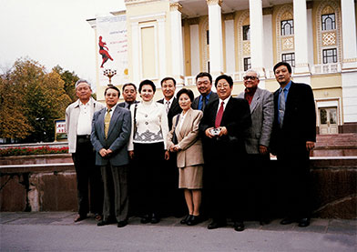
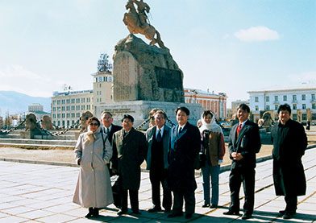
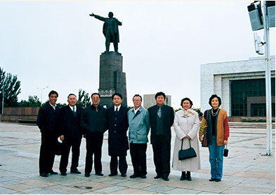
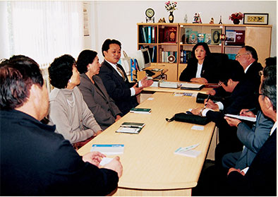
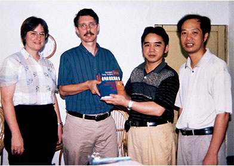
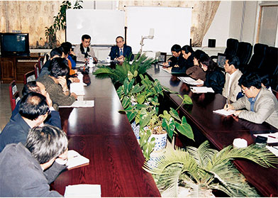
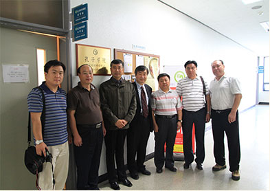
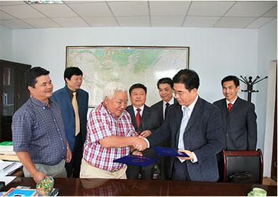
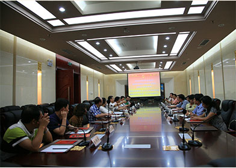

|  以中国民族语文翻译局副局长唐笑武（左五）为团长的中国民族语文翻译局跨境民族语言文字考察团于2001年访问哈萨克斯坦共和国社会科学院。考察团成员与该院领导合影。 |  中国民族语文翻译局跨境民族语言文字考察团出访蒙古国期间，在苏赫巴特尔广场合影。 | |
|  中国民族语文翻译局跨境民族语言文字考察团访问吉尔吉斯斯坦共和国期间在国家独立广场合影。 |  中国民族语文翻译局跨境民族语言文字考察团在哈萨克斯坦共和国国立大学东方语言系访问考察。 | |
|  中国民族语文翻译局壮文室向长期从事壮语言文字研究的美国梅思德、白丽珠夫妻赠送壮民族丛书。 |  联合国教科文组织术语专家加林斯基应邀在中国民族语文翻译局讲学。 | |
|  2011年，翻译局代表团赴韩国进行文化交流 |  2012年，翻译局出访团访问蒙古国并签订交流合作意向书 | |
|  2012年，朝鲜出版物进出口公司代表团访问翻译局 | 2014年，韩国国立国语院来翻译局交流访问 |